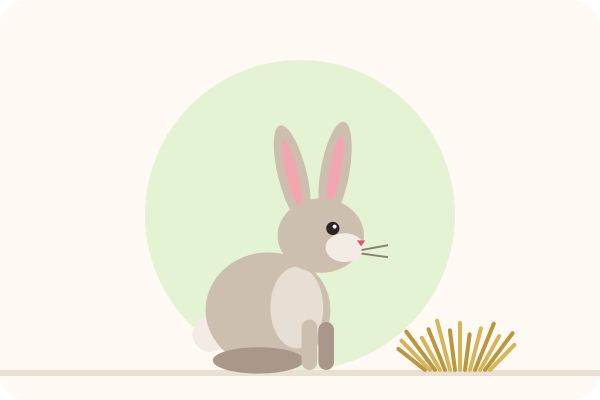

Un chien qui écoute, un chat qui ne griffe plus : sans punition
Rappel, propreté, mordillements, griffades, peurs… Des méthodes douces et efficaces, fondées sur la recherche en comportement animal, expliquées étape par étape.

Quel est votre problème ?
Choisissez votre situation : la solution complète s'ouvre en un clic.

🐕 Mon chien ne revient pas
Le rappel en 7 étapes, pour qu'il revienne à tous les coups, même au parc.

🐶 Mon chiot mord
Lui apprendre à doser sa mâchoire et proposer les bons jouets.

🚽 Mon chiot n'est pas propre
Les bons moments pour sortir et la récompense au bon moment.

🦮 Mon chien tire en laisse
La méthode pour des balades détendues, sans tirer sur le bras.

🐈 Mon chat griffe le canapé
Le griffoir au bon endroit et les récompenses : vos meubles sont sauvés.

🐇 J'ai un lapin ou un NAC
Propreté, manipulation en douceur et jeux pour lapins, rongeurs et oiseaux.
Pourquoi nos méthodes marchent
🔬 Fondées sur la recherche
Nous suivons les recommandations des vétérinaires comportementalistes et des études scientifiques. Voir nos sources.
💛 Sans punition
Le renforcement positif apprend vite, sans stress, et renforce votre lien avec votre animal.
📋 Pas à pas
Des étapes courtes et concrètes, à appliquer dès aujourd'hui, même si vous débutez.
Bien choisir son matériel
Nos comparatifs indépendants pour acheter juste ce qu'il faut.


Questions fréquentes
Les guides sont-ils vraiment gratuits ?
Oui, tous les guides sont gratuits et sans inscription. Le site est financé par l'affiliation : si vous achetez un produit recommandé, nous pouvons toucher une petite commission, sans surcoût pour vous.
Ça marche aussi avec un chien adulte ?
Oui. Un chien apprend à tout âge. Il faut parfois un peu plus de patience pour remplacer une ancienne habitude, mais les méthodes sont les mêmes.
En combien de temps verrai-je des résultats ?
Cela dépend de l'animal et du problème. Avec quelques courtes séances par jour, beaucoup de propriétaires voient déjà des progrès en quelques jours. Restez régulier et patient.
Et si le comportement est lié à la santé ?
Un changement brutal de comportement, de la douleur ou de la malpropreté soudaine doivent d'abord être vus par un vétérinaire. Nos conseils ne remplacent pas son avis.